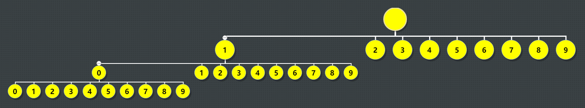

题目 #
Given two integers n and k, return the $k^{th}$ lexicographically smallest integer in the range [1, n].
Example 1:
Input: n = 13, k = 2
Output: 10
Explanation: The lexicographical order is [1, 10, 11, 12, 13, 2, 3, 4, 5, 6, 7, 8, 9], so the second smallest number is 10.
Example 2:
Input: n = 1, k = 1
Output: 1
Constraints:
$1 \le k \le n \le 10^9$
思路1，字典树 #
分析 #
字典序，那么使用一个树进行整理更加清晰一些

前序遍历就是字典序
关键点1，第k个怎么找。从图中可以看出来，使用前序遍历
- 如果某个节点的所有子节点个数小于k，那么第k个节点一定不在此节点的子树内，找下一个兄弟节点
- 如果某个节点的所有子节点个数大于k，那么第k个节点一定在此节点的子树内，可以从此节点的子节点继续计算
关键点2，如何计算当前节点的子节点个数。可以一层一层计算，假设取1的子节点。
- 第一层，10-19
- 第二层，100-199
- 第三层，1000-1999
如果k是1开头的，那么在某一层，一定存在k。如果k不是1开头的，那么存在一层，起始就大于k
代码实现 #
- 因为用go写，int在64位是64位，所以不存在使用c++时需要考虑32位溢出的情况
1func min(a, b int) int {
2 if a < b {
3 return a
4 }
5 return b
6}
7
8// 获取当前节点的子节点个数，n为总数
9func getChildCount(cur int, n int) int {
10 // 假设cur为1，第一层为10-19
11 // 第二层100-199
12 // 第三层1000-1999
13 count := 0
14 start := cur * 10
15 end := start + 9
16 for start <= n {
17 // n为13，那么这一层就是13-10+1=4个节点
18 count += min(end, n) - start + 1
19 start *= 10
20 end = end*10 + 9
21 }
22 return count
23}
24
25func findKthNumber(n int, k int) int {
26 cur := 1
27 k-- // k为0时，cur就是所求。如果k为1，那么返回第一个也就是1，所以这里减一
28 for k > 0 {
29 // 获取当前节点的子节点个数
30 count := getChildCount(cur, n)
31 // 当k大于当前节点的子节点数，假设n为11，k为4。 1 10 11 2 3 4 5 6 7 8 9
32 // 到这里k为3，count为2，计算后k为0，cur为2
33 if k > count {
34 k -= count + 1
35 cur++
36 continue
37 }
38 // k小于等于count
39 // 小于的情况，假设n为11，k为2。 1 10 11 2 3 4 5 6 7 8 9
40 // 到这里k为1，count为2，计算后k为0，cur为10
41 // 等于的情况，假设k为3
42 // 到这里k为2，计算后k为1，cur为10
43 cur *= 10
44 k--
45 }
46 return cur
47}
- 考虑32位溢出的情况
1func min(a, b int64) int64 {
2 if a < b {
3 return a
4 }
5 return b
6}
7
8// 获取当前节点的子节点个数，n为总数
9func getChildCount(cur int32, n int32) int64 {
10 // 假设cur为1，第一层为10-19
11 // 第二层100-199
12 // 第三层1000-1999
13 var count int64 = 0
14 var start int64 = int64(cur * 10)
15 var end int64 = start + 9
16 for start <= int64(n) {
17 // n为13，那么这一层就是13-10+1=4个节点
18 count += min(end, int64(n)) - start + 1
19 start *= 10
20 end = end*10 + 9
21 }
22 return count
23}
24
25func findKthNumber(n int32, k int32) int32 {
26 var cur int32 = 1
27 k-- // k为0时，cur就是所求。如果k为1，那么返回第一个也就是1，所以这里减一
28 for k > 0 {
29 // 获取当前节点的子节点个数
30 count := getChildCount(cur, n)
31 // 当k大于当前节点的子节点数，假设n为11，k为4。 1 10 11 2 3 4 5 6 7 8 9
32 // 到这里k为3，count为2，计算后k为0，cur为2
33 if int64(k) > count {
34 k -= int32(count + 1)
35 cur++
36 continue
37 }
38 // k小于等于count
39 // 小于的情况，假设n为11，k为2。 1 10 11 2 3 4 5 6 7 8 9
40 // 到这里k为1，count为2，计算后k为0，cur为10
41 // 等于的情况，假设k为3
42 // 到这里k为2，计算后k为1，cur为10
43 cur *= 10
44 k--
45 }
46 return cur
47}